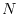
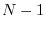

Next: General Item Routines Up: Miriad Subroutine Library Previous: Reading and Writing Blanking
subroutine scropen(tno)
subroutine scrread(tno,buffer,offset,length)
subroutine scrwrite(tno,buffer,offset,length)
subroutine scrclose(tno)
The scratch i/o routines are used to create and read and write from a
scratch file containing real-valued data. Here tno is a handle passed
back by the open routine,
and must be used in all subsequent calls to the scratch i/o routines.
Scrread and scrwrite read and write scratch data to/from the
real array buffer. Length values are accessed, starting
at the offset given by offset (for a scratch file of  real
values, offset can vary from 0 to ).